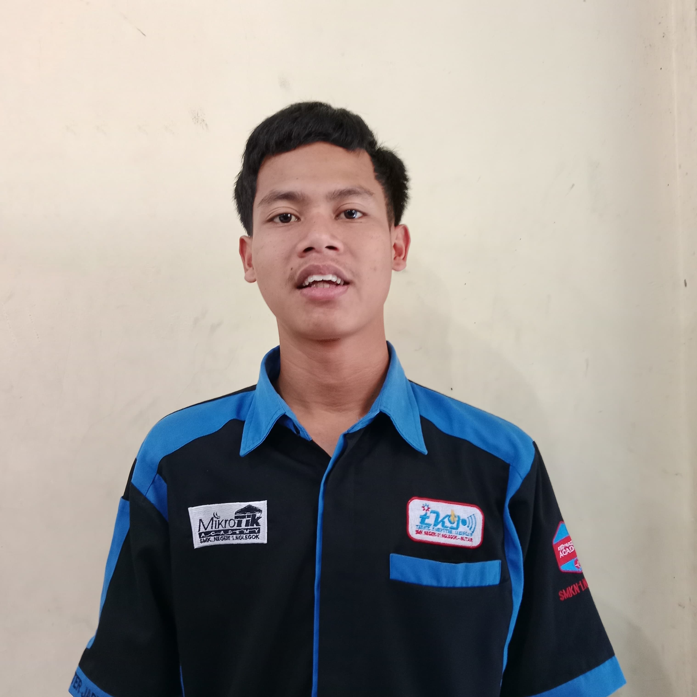

syahdan abi .s
Instalasi dan Konfigurasi Jaringan LAN
Merancang jaringan lokal (LAN), setting IP Address (static & DHCP),
serta menguji konektivitas menggunakan ping dan tracer.
Konfigurasi Router Mikrotik
Melakukan konfigurasi dasar menggunakan Winbox, mengatur DHCP Server,
NAT, dan firewall sederhana.
Administrasi Sistem
Instalasi Windows Server, pembuatan user account, pengaturan hak
akses, serta backup dan keamanan data dasar.
Pembuatan Web Dasar (HTML, CSS, PHP)
Membuat halaman web, form input, serta koneksi database menggunakan
PHP & MySQL.